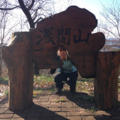

2015年 活動報告
-
3/18 野島公園BBQ
SACの創設を記念し、部員一同で神奈川県の野島公園にてBBQを行いました。 -
4/24 妙義山登山
SAC初の山活動。部員全員で妙義山へ！桜を満喫しながらの楽しい山行となりました。 -
6/24 山手線一周
山手線沿いを徒歩で一周しようというこの企画。深夜に新宿に集合し、夜な夜な都心を一周しました！ -
7/29-8/7 北海道一周ドライブ
フェリーに車を乗せていざ北海道へ！北海道の観光地を車で回りながらキャンプ！ -
8/1-8/25 北海道一周自転車ツーリング
自転車を分解して電車に載せて、北海道に上陸。３週間かけて海岸線沿い2000㎞を回る長旅となりました。 -
8/20-8/23 穂高岳縦走
穂高涸沢縦走組の計画でしたが、、、あいにくの雨により上高地?涸沢ヒュッテの往復！ -
8/29-8/31 湯檜曽川東黒沢白毛門沢
群馬県みなかみ町湯檜曽川東黒沢・白毛門沢で沢登りをしてまいりました。雨が降っており、増水に加え、滑りやすいという状況でヒヤヒヤする場所が何箇所かありましたが、みんな無事に活動を終えることができたので、よかったです！ -
9/13-9/16 白馬岳縦走
白馬岳縦走に行ってきました。天候に恵まれ最高の登山。アイゼンを付けての大雪渓では普段とは違う登山を味わうことができました！！ -
9/22-9/27 神津島探検
東京より出発し、神津島へ。地元の方々とも仲良くなりながら、楽しい5日間でした！ -
10/9-10/10 黒斑山登山
黒斑山を登ってきました。天候にも恵まれ、一足早く紅葉を見て秋を感じることができました。夜の星空も最高に綺麗！ -
10/31-11/1 雲取山登山
東京最高峰の百名山、雲取山に登ってきました。31日はハロウィンという事で仮装しながらの登山でした（≧∇≦）富士山も御来光も綺麗に見ることができ大満足。 -
11/27-11/28 富士風穴探検
天然記念物富士風穴にいってきました。SAC初の洞窟活動でしたが、みんな楽しめました。帰りに時間があったので、富士山五合目までドライブ！ - 
12/12 弘法山登山
標高なんと250m足らずの山笑。お散歩感覚でゆる?りとした活動でした。紅葉もぎりぎり見ることが出来ました。 -
12/27 天城山登山
伊豆の天城山を上りました！1406mという高さですが、百名山なのです。時期が時期だけに霜が降りてすっかり冬景色、風が吹くと枝についた霜が落ちて吹雪のようで綺麗でした